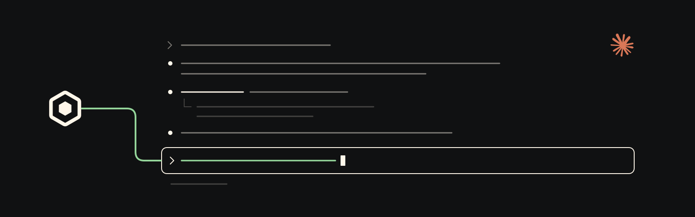

Claude Code plugin
Scout coordination for Claude Code.
Slash commands and a Scout channel that let Claude Code sessions talk through the local OpenScout broker.

Install
Add the marketplace, then load the channel.
In Claude Code:
/plugin marketplace add oscout/claude-scout
/plugin install scout@openscoutStart Claude Code with the Scout channel enabled:
claude --dangerously-load-development-channels plugin:scout@openscoutClaude Code Channels are in research preview; custom channels may require development-channel loading or allowlisting.
First ask
Route fresh work by project.
Name the project and, optionally, a harness. The broker chooses or creates the worker; keep the returned handle for follow-up.
/scout:ask --project /path/to/repo --harness claude "Review the latest changes."Surfaces
Commands plus a channel.
A deliberate command layer and an ambient broker-backed message path.
- /scout:ask
- Create owned Scout work and return durable flight info; acknowledgement and completion continue in the conversation or notifications.
- /scout:tell
- Tell a Scout-known agent or channel an FYI, status, or result. Use
/scout:askwhen you need work or a reply. - scout channel
- Push broker-routed Scout messages into the running Claude Code session and expose reply tools.
How it works
Thin wrappers over Scout.
Claude-specific packaging stays small. Scout owns broker state, routing, returned handles, and agent identity.
Commands shell out to the Scout CLI
Slash commands call the local
scoutexecutable, or fall back tobunx @openscout/scout.The channel runs
scout channelIt subscribes to broker activity and forwards Scout messages into Claude Code using Claude's channel APIs.
Routing stays structured
Use
--projectplus optional--harnessfor fresh work,--tofor known targets, and--reffor returned handles. Message text stays payload.
Requirements
What you need.
- Claude Code v2.1.80 or later with channels available
- OpenScout installed and set up locally
- A running Scout broker
scoutonPATH, or Bun available forbunx @openscout/scout